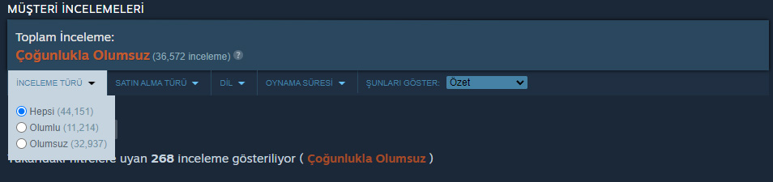

Video oyun sektörünün köklü isimlerinden Electronic Arts, geçtiğimiz günlerde yeni savaş oyunu Battlefield 2042'yi piyasaya sürdü. Oyuncular, oyunun yayınlanmasıyla Battlefield 2042'ye adeta hücum ettiler. Ancak Electronic Arts, oyuncuların beklentilerini tam olarak karşılayamamış gibi görünüyor. Zira 44 bin civarında yorumlanan oyun, Steam'de "Çoğunlukla Olumsuz" etiketini almış durumda.
Steam'deki değerlendirmelere baktığımızda, Battlefield 2042 için yalnızca 11 bin civarında olumlu yorum olduğunu görüyoruz. Yani bu oyunu ön sipariş kapsamında ya da yayınlandıktan sonra satın alıp yorum yapma gereksinimi hisseden her 4 oyuncudan 3'ü, Battlefield 2042'yi beğenmediğini belirtti. Böyle dikkat çekici bir istatistiğin ortaya çıkmasına yol açan belki de en önemli neden, oyundaki teknik sorunlar.
Battlefield 2042 için yapılan yorumlara baktığımızda, oyuncuların karşılaştıkları hatalardan, çökme sorunlarından ve sunuculardaki kesintilerden rahatsız olduklarını görüyoruz. Hatta bazı oyun tutkunları, Battlefield 2042'nin henüz tamamlanmamış bir oyun bile olmadığını ileri sürdüler. Böyle düşünülmesinin nedeni, oyun içi sesli sohbet ve çevrimiçi oyun modlarındaki liderlik tablosunun henüz bulunmuyor oluşuydu.